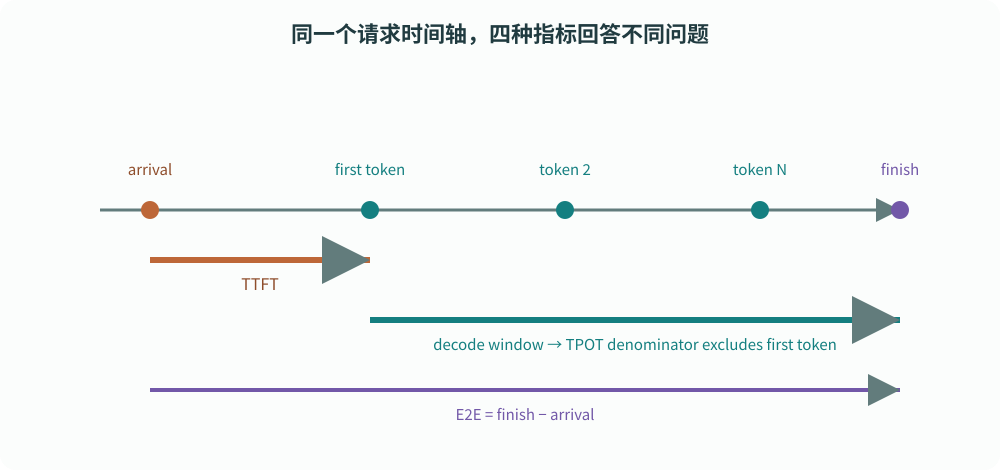
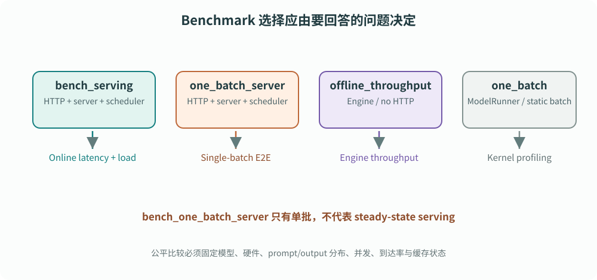

第 25 章 · SGLang 生产推理机制
Observability & Benchmarking：TTFT、TPOT 与性能剖析
把 SGLang Prometheus metrics、request lifecycle、bench_serving、offline throughput 与 PyTorch Profiler 连接成可复现的性能分析流程。
把 SGLang Prometheus metrics、request lifecycle、bench_serving、offline throughput 与 PyTorch Profiler 连接成可复现的性能分析流程。 本章将论文中的算法背景、SGLang 当前实现、可复现的教学抽象与硬件限制分开说明。实现断言固定到 2026-11-23 的上游快照，不能把兼容表当成永久承诺。
读完本章，你应该能
- 画出从输入数据到运行时执行路径的关键对象。
- 解释数学近似、内存布局和 kernel/backend 之间的约束。
- 用 CPU-only toy 实验检查边界，而不把教学代码误称为 GPU 实现。
1. 先问系统正在经历什么，而不是只看 tokens/s
生产推理需要同时看请求延迟、排队、token throughput、KV cache 使用率、cache hit、转移成本和设备执行时间。一个平均 tokens/s 数字可能掩盖 p95 TTFT、长尾 TPOT、排队堆积或 cache miss。SGLang 的 observability 不只包含 Prometheus metrics，还包括 request logging、request dump/replay、crash dump 和 profiling。每种机制有不同的数据敏感性和权限边界。
2. TTFT、TPOT、ITL 与 E2E latency

TTFT 是 request arrival 到 first token 的时间；TPOT 衡量首 token 之后每个输出 token 的平均间隔；ITL 通常是相邻输出 token 的时间差，聚合时可能采用 token-weighted 口径。E2E latency 则从 request arrival 到完成。
当前 SGLang request-level TPOT 对每个成功完成且至少输出 2 tokens 的请求记录一次；首 token 被排除，因为它属于 TTFT。Aborted request、只有一个输出 token 的请求和 PD prefill worker 不计入该 histogram。它与 token-weighted ITL 不是同一个统计口径。
3. Prometheus 指标类型：Counter、Gauge 与 Histogram
Counter 适合累计事件，例如 prompt tokens、generation tokens、HTTP requests；Gauge 适合瞬时状态，例如 running requests、queue requests、KV token usage；Histogram 适合延迟分布，例如 TTFT、TPOT 和 E2E request latency。它们的聚合方法不同：不能把 counter 当前值直接当作速率，也不能从 histogram 的 sum/count 得到 p95。SGLang 文档还包含 cache hit rate、KV transfer latency/speed、CUDA Graph、LoRA pool、HiCache 等机制指标。实际部署要根据启用的功能与当前版本确认指标是否存在。
4. 从 Scheduler 到 Prometheus/Grafana
Scheduler metrics reporter 汇总 scheduler stage、forward pass、decode throughput、KV transfer 和其他运行时状态；metrics collector 把这些数据注册成 Prometheus metric families，外部 Prometheus scrape 后由 Grafana dashboard 展示。观测指标是系统状态的投影，不是内部真实状态的完整复制。例如一个 cache hit rate 不能独立说明 prefix cache 对 TTFT 的因果贡献；还要结合请求长度、queue time、prefill compute 和 cache namespace。
仪表盘示例：SGLang Grafana dashboard。
5. 四种 Benchmark 工具测量四个不同层级

bench_serving 是在线异步 HTTP load test，经过 server 与 scheduler，适合测 TTFT、TPOT、ITL、throughput。bench_one_batch_server 也经过 HTTP 与 scheduler，但只有单批，无法代表 steady state。bench_offline_throughput 直接在进程内调用 Engine，不包含 HTTP overhead。bench_one_batch 直接调用 ModelRunner，绕过 scheduler，适合固定 batch 的 kernel latency profiling。
官方建议默认用 `bench_serving` 做真实在线服务测量；除非你明确要隔离某一层，否则不要用静态 batch 的 kernel latency 代表生产服务表现。
6. Steady state：请求到达过程会改变测量结论
Benchmark 的并发、到达率和 prompt/output 长度分布必须固定。SGLang 文档建议 `bench_serving` 使用至少 `num-prompts >= 5 × max-concurrency` 来测量 steady-state。短跑测试容易被 warmup、首批 prefill、batch 填充和尾部 batch 变小影响。真实流量应保留请求到达时间、prompt token 长度、output cap、stop/EOS 行为和 streaming mode。开放式到达率与闭环固定并发会形成不同排队行为；不能只用相同的 max-concurrency 就宣称负载相同。
7. Profiling：先定位层级，再深入 kernel
PyTorch Profiler 可观察 kernel execution time、call stack、kernel overlap 与 occupancy；Nsight Systems 可以看 CPU/GPU timeline、stream synchronization 和通信。SGLang 的 `bench_serving --profile` 会调用 `/start_profile` 和 `/stop_profile` admin endpoints，因此 server 与 client 必须使用相同的 `SGLANG_ADMIN_API_KEY`。PD 模式下 prefill 与 decode worker 应分别 profile。先用在线 benchmark 发现用户可见的瓶颈，再用 scheduler stage metrics、trace、PyTorch Profiler 或 Nsight 逐层定位。直接从一个慢 kernel 推断整体 TTFT，往往会忽略队列、HTTP、prefill 和数据传输。
8. Logging 与 request dump：可观测性也有隐私边界
SGLang 默认不记录 request contents。只有显式启用 `--log-requests` 才会记录请求内容；request dump/replay 和 crash dump 会把请求、server args 或 in-flight data 写到文件。它们适合复现 bug 和回归流量，但可能包含用户输入、敏感数据和内部路径。在生产环境中启用之前，应确认访问控制、文件权限、保留期限、脱敏策略和数据删除流程。Profiling admin endpoint 也应使用 admin key，不要把管理凭证写进公开脚本或 dashboard。
9. 交互：选择 benchmark 工具
Benchmark question selector
bench_serving：包含 HTTP、server 和 scheduler，适合在线延迟、吞吐、并发与到达率评估。
bench_offline_throughput：直接调用 Engine，不包含 HTTP overhead，适合测服务引擎在给定负载下的吞吐上限。
bench_one_batch：绕过 scheduler，固定 batch 调 ModelRunner，适合 profiling；不能代替动态批处理的在线指标。
运行 serving_metrics.py，计算 TTFT、request-level TPOT、p95 与 tokens/s。它使用合成时间戳，不连接运行中的 server。
10. 源码阅读路线与参考资料
- Production Metrics：metric definitions 与 PromQL。
- Benchmark and Profiling：工具层级与 profiler。
- metrics_collector.py 与 metrics_reporter.py：metric registration 与 scheduler reporting。
实现快照：sgl-project/sglang@563813c0d60282fa848382fec600b40d28ddec98。性能结论必须附硬件、模型、请求分布、并发、缓存状态和 measurement window。